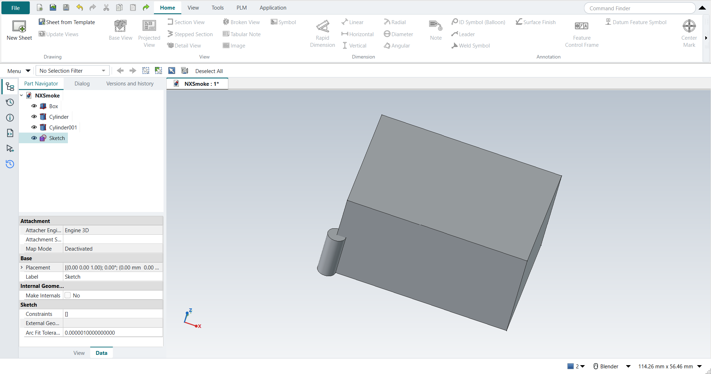
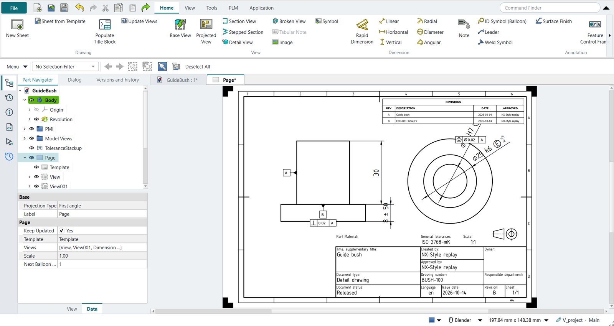

Drafting
The Drafting application is FreeCAD’s TechDraw workbench with NX’s ribbon. Ctrl+Shift+D switches to it.

Sheets
Home › Drawing › New Sheet makes a sheet from the default template. NX asks for the size, projection and scale in one Sheet dialog; in FreeCAD they are the sheet’s properties:
| NX Sheet dialog | FreeCAD sheet property |
|---|---|
Size (A-8.5X11, B-11X17 …) |
|
Projection |
|
Scale |
|
Changing the template later keeps the views where they are, as NX’s Edit Sheet does. FreeCAD’s default sheet is A4.
NX’s Drafting Preferences › View › Display Borders has no button here. A FreeCAD sheet starts with its Show Frames property off. FreeCAD’s own Turn View Frames On/Off stays greyed in FreeCAD 1.1.4.
Title block and revision block
Home › Drawing › Populate Title Block fills the sheet’s title block the way NX fills it from the part’s attributes. A released drawing’s title block carries the part number, the revision, the title, the material, the scale, the sheet, the tolerancing note, and who made and approved it and when (Drake, Dimensioning and Tolerancing Handbook, ch. 4; ISO 7200). The values come from these sources; the first one that has a value wins:
-
the part’s newest Strata release: part number, revision, state, who released it, who approved it, and the date. The title is what the part’s first release called it, because a later release’s description says what changed.
-
the document’s NX attributes
DB_PART_NO,DB_PART_REV,DB_PART_NAMEandDB_PART_DESC, in itsMeta, as Teamcenter would fill them. -
the document itself: its label, author and company.
The drawing adds what it knows: the scale, the sheet number, the material and mass of the part it shows, and the general tolerance of its PMI (ISO 2768-mK).
With no general tolerance, the field reads ISO 8015 (or ASME Y14.5-2018). ISO 8015 needs no mention beside a general tolerance, because it applies whenever ISO GPS is invoked.
The title block then states the tolerancing, so the note that Inherit PMI put on the sheet is removed and is not added again.
The dialog shows the values to check before OK.
If the sheet’s template has no title block fields, as FreeCAD’s default sheet has none, the dialog gives the sheet FreeCAD’s ISO 5457 template of the same size, with an ISO 7200 title block. The template’s sample texts are cleared.
Revision block puts the revision history in the sheet’s top right corner: one row per release, with its revision, its description (what changed), its date and who approved it. It is replaced when you run the command again.

Tutorial AC fills the guide bush’s sheet after its two releases.
Views
| NX | Here |
|---|---|
Base View |
Select the body, click Base View, press MB2. The view’s direction is a property. |
Projected View |
Select the parent view (else the newest base view is taken), click Projected View, then Above, Right, Below or Left once for each view; MB2, OK or Esc ends it and keeps the views. Each view is the part turned for the sheet’s projection angle (third angle: the view above is the top view), at the parent’s scale and view style, lined up with it. One undo step removes them all. |
Projection Group |
FreeCAD’s own projected views: a group made from the part, with its own anchor view. |
Section View |
Select the base view, click Section View, pick the direction in the dialog, MB2. The new view lands on the base view; move it afterwards. |
Detail View |
Detail View magnifies an area of a selected view. |
MB2 presses OK in the open drawing dialog, as in the graphics window; MB2 drag still pans the sheet.
- View style
-
Hidden lines (Hard Hidden), line widths and smooth edges (Smooth Visible) are view properties; NX sets them in the view’s Settings dialog.
Dimensions
The Dimension group has Rapid Dimension, Linear, Horizontal, Vertical, Radial, Diameter and Angular.
-
TechDraw dimensions attach to vertices, edges and circles. To dimension to a hole’s centre, add a cosmetic vertex there first; NX snaps to arc centres.
-
A basic dimension is the dimension’s Theoretical Exact property; it draws the box.
-
Tolerances and a count such as
4Xgo in the dimension’s properties. -
Decimals are the dimension’s Format Spec (
%.2ffor two). -
Arrows out (NX’s Arrow Out) is the dimension’s FlipArrowheads property.
-
The drafting standard (ISO, ASME) is in Preferences › TechDraw › Dimensions › Standard and Style. Set ASME Inlined for ANSI’s horizontal text.
TechDraw has no Feature Parameters: it cannot bring a feature’s sketch dimensions onto a view. Its dimensions are reference dimensions measured from the view; they follow the model but do not drive it.
GD&T
FreeCAD 1.1 has only fixed GD&T pictures. NX-Style adds NX’s two dialogs on Home › Annotation:
- Datum Feature Symbol
-
Select a view edge, click Datum Feature Symbol, type the letter, MB2. The symbol sits against the edge, outside the view.
- Feature Control Frame
-
Select a dimension or an edge, click Feature Control Frame, then choose the characteristic, the Ø zone, the tolerance, the material condition and up to three datums with their modifiers. A frame for a dimension goes under it.
The tolerance and the datum letters stay editable afterwards, as the symbol’s editable texts.

- Inherit PMI
-
When the part is documented in 3D (PMI), select a view and click Inherit PMI: the dimensions with their ISO classes and tolerances, the frames, the datum symbols and the tolerancing note come onto the sheet.
Center marks, notes, hatches
-
Center Mark draws centre lines for the selected circles; TechDraw adds none by itself.
-
Note: select the view edge the leader ends on (NX’s terminating object), click Note, type the text; Ø, ° and ± are on the Symbols buttons. The lettering height and the leader’s stub length are fields of the dialog (NX sets them in the note’s Settings afterwards). The leader runs outward, away from the view. With no edge selected the note has no leader.
-
ID Symbol (Balloon), Leader, Weld Symbol and Surface Finish are on the Annotation group; Rich Text Note is FreeCAD’s own note.
-
Hatch and Crosshatch fill faces and sections.
Hide and show
Ctrl+B hides the selection on the sheet as in the model. To show hidden items again, select them in the Part Navigator and press Ctrl+Shift+K. With nothing selected, Ctrl+Shift+K lists the hidden objects to pick from.
Associativity
Change the model in Modeling (Ctrl+M) and come back with Ctrl+Shift+D: the sheet has updated by itself (the sheet’s Keep Updated). NX marks the drawing out of date and asks for Update.
See also
-
Tutorial D — base and section views.
-
Tutorial H — a GD&T drawing with datums and feature control frames.
-
Tutorial N — sheet sizes, view styles, center marks and an associative change.
-
Tutorial T — a drawing made from the part’s PMI, to ISO GPS.